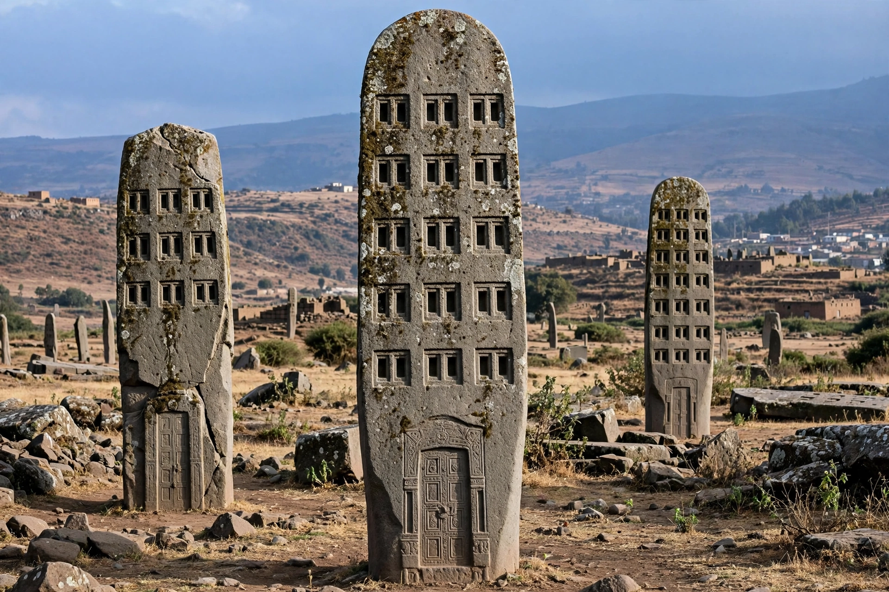

| Aksum | |
|---|---|
| Location | Tigray Region, Ethiopia |
| Coordinates | 14.12°N 38.72°E (approx.) |
| Known for | Capital of the Aksumite Empire; great stelae field |
| UNESCO | World Heritage Site (1980) |

Aksum (also spelled Axum) is a town in the Tigray Region of northern Ethiopia. It was the capital of the Kingdom of Aksum, one of the great powers of the ancient world between the 1st and 7th centuries AD, and remains a major religious centre of the Ethiopian Orthodox Church, revered as the home of the Ark of the Covenant.
The Aksumite Empire grew rich on trade between the Roman world, Arabia and India through its Red Sea port of Adulis. Its kings erected enormous carved granite stelae — the largest, now fallen, stood about 33 metres tall and is among the largest monoliths ever attempted. King Ezana converted to Christianity around the 330s AD, making Aksum one of the earliest Christian states. In the 6th century King Kaleb invaded Himyar in Yemen. The empire declined from the 7th century as trade routes shifted, though Aksum retained immense religious prestige.
The archaeological zone includes the Northern Stelae Field with the famous obelisks — one of which, taken to Rome under Mussolini in 1937, was returned and re-erected in 2008 — the tombs of kings Kaleb and Gebre Mesqel, the palace ruins of Dungur, and the church of St Mary of Zion, where Ethiopian tradition holds the Ark of the Covenant is guarded. Aksum was inscribed as a UNESCO World Heritage Site in 1980. The city was heavily affected by the Tigray War of 2020–2022.